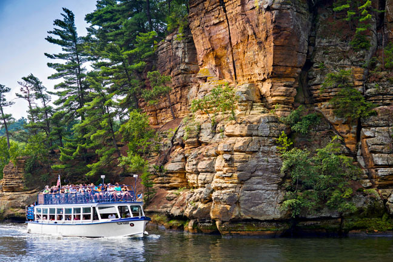

If you have not heard of Wisconsin Dells it is a family fun town filled with all sorts of fun attractions for you and your family. It is kind of like a Disneyland of the Midwest. The entire town is filled with water parks, amusement parks, fun stores, and so much more. When I was a little kid my family and I would drive up there and spend a week there. There is a lot of resorts and hotels to choose from. When I was little we would either stay at Wilderness Resort or Meadowbrook Resort. There is a great mix of fun attractions and wilderness to enjoy. The town is located on a river and is also surrounded by lakes you can go swimming in. The city is also called Dells because of these rock formations that are around the area. They were carved by ancient glaciers during the ice age. A fun thing to do is going on tour of the river where you can tour the area and look at the rock formations. Wisconsin Dells is home to the world's largest water park called Noah's Arc. There tons of cool things to do like rid the water slides, go into the wave pools, relax in the lazy rivers, and ride the numerous water raft rides. There is also a big amusement park called Mount Olympus which has a lot of fun roller coasters rides, alonmg with a huge mini-golf course. There is also a lot of good restaurants in the area. There is truly something for everybody here.
